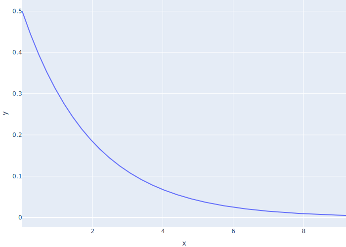
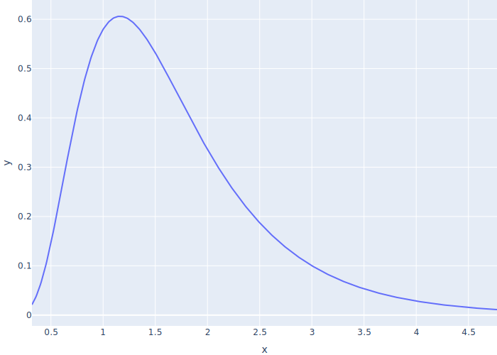

Multiple Actors
- FIXME
One Manager, One Developer, Fixed Times
- Use
simpy.Storeto model a job queue- First-in, first-out
- Infinite capacity (for now)
- A generic
Workersaves constructor arguments and calls.runto run
class Worker:
def __init__(self, env, log, queue):
self.env = env
self.log = log
self.queue = queue
self.env.process(self.run())
- A
Managerputs jobs in the queue- Use
countto generate a sequence of numbers to identify jobs - Append a record to the log (instrumentation not sampling)
- For now, wait 4 ticks between each job
- Use
- Most important part is
queue.put(job)- Creates an object asking SimPy to add something to the queue
- Process must
yieldthis object to return control to the framework - So that the framework can block this process if the queue is full (finite capacity)
- And run other processes that might be waiting
- Remember: co-operative concurrency
from itertools import count
class Manager(Worker):
def __init__(self, env, log, queue):
super().__init__(env, log, queue)
self.jobs = count()
def run(self):
while True:
job = next(self.jobs)
self.log.append(
{"id": "manager", "time": self.env.rnow, "job": job, "event": "create"}
)
yield self.queue.put(job)
yield self.env.timeout(self.t_job_arrival())
def t_job_arrival(self):
return 4
Programmertakes jobs from the queue and works on them- Again, must
yieldthe object created byqueue.get()so that SimPy can handle scheduling - Work for a fixed time (we'll change this in a moment)
- Again, must
class Programmer(Worker):
def run(self):
while True:
job = yield self.queue.get()
job_length = self.t_job_length()
self.log.append(
{"id": "programmer", "time": self.env.rnow, "job": job, "event": "start",}
)
yield self.env.timeout(job_length)
self.log.append(
{"id": "programmer", "time": self.env.rnow, "job": job, "event": "end"}
)
def t_job_length(self):
return 3
- Output is predictable (fixed times) and therefore easy (or easier) to check
[
{"id": "manager", "time": 0, "job": 0, "event": "create"},
{"id": "programmer", "time": 0, "job": 0, "event": "start"},
{"id": "programmer", "time": 3, "job": 0, "event": "end"},
{"id": "manager", "time": 4, "job": 1, "event": "create"},
{"id": "programmer", "time": 4, "job": 1, "event": "start"},
{"id": "programmer", "time": 7, "job": 1, "event": "end"},
{"id": "manager", "time": 8, "job": 2, "event": "create"},
{"id": "programmer", "time": 8, "job": 2, "event": "start"}
]
FIXME: diagram
Random Times
- Assume probability of manager generating a new job in any instant is fixed
- I.e., doesn't depend on how long since the last job was generated
- If the arrival rate (jobs per tick) is λ, the time until the next job is an exponential random variable with mean 1/λ

- Use a log-normal random variable to model job lengths
- Most jobs are short but there are a few outliers
- If parameters are μ and σ, median is eμ
